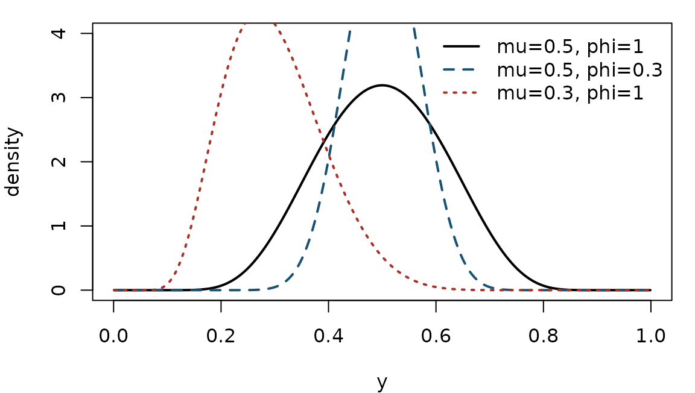
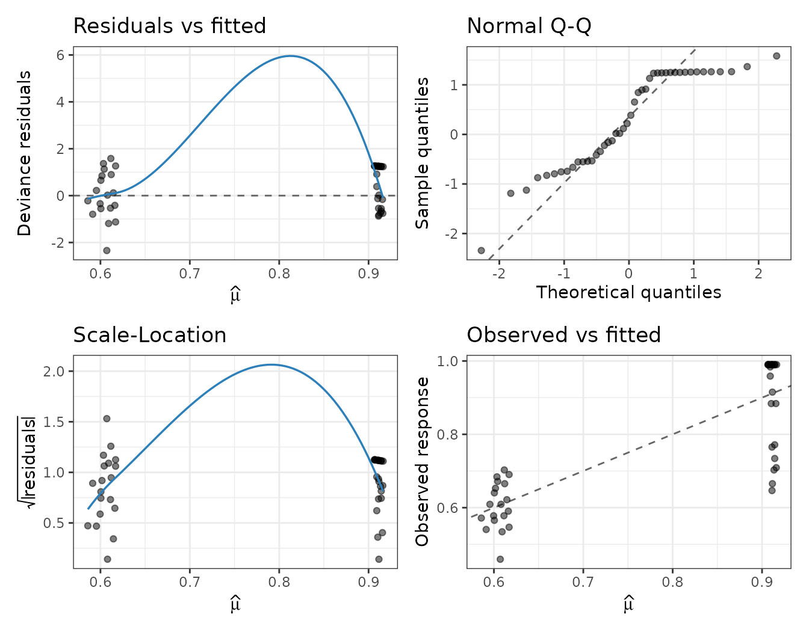

Fast simplex regression with variable dispersion
Source:vignettes/fastsimplexreg.Rmd
fastsimplexreg.Rmd1. Bounded proportions and the simplex distribution
Responses that are continuous proportions or rates restricted to the open interval — the fraction of a resource used, a recovery rate, a concentration relative to a maximum — violate the assumptions of ordinary linear regression: their support is bounded and their variance is inherently heteroscedastic, shrinking towards the boundaries and . Two likelihood based models dominate this setting: beta regression and simplex regression. This package implements the latter.
The simplex distribution (Barndorff-Nielsen and Jørgensen, 1991) is a member of the class of dispersion models. A random variable has a simplex distribution with mean and dispersion , written , if its density is where is the unit deviance. On the log scale, The mean of is exactly , and to first order in the dispersion the variance is with the simplex variance function — the variance is largest near and vanishes at the boundaries. The dispersion here is the parameter of Barndorff-Nielsen and Jørgensen (1991).
grid <- seq(0.001, 0.999, length.out = 400)
op <- par(mar = c(4, 4, 1, 1))
plot(grid, dsimplex(grid, mu = 0.5, phi = 1), type = "l", lwd = 2,
xlab = "y", ylab = "density", ylim = c(0, 4))
lines(grid, dsimplex(grid, mu = 0.5, phi = 0.3), lwd = 2, lty = 2, col = "#1a5276")
lines(grid, dsimplex(grid, mu = 0.3, phi = 1), lwd = 2, lty = 3, col = "#a93226")
legend("topright", bty = "n",
legend = c("mu=0.5, phi=1", "mu=0.5, phi=0.3", "mu=0.3, phi=1"),
lwd = 2, lty = 1:3, col = c("black", "#1a5276", "#a93226"))
par(op)Smaller concentrates the mass around the mean; changing shifts and skews the density.
2. The regression model
fastsimplexreg() models both the mean and the dispersion
as functions of covariates. For observation
,
The dispersion always uses a log link
(so
).
The mean link
can be logit, probit,
cloglog or neglog:
| link | ||
|---|---|---|
| logit | ||
| probit | ||
| cloglog | ||
| neglog |
Estimation is by maximum likelihood. The log-likelihood, the analytic score, a native BFGS optimiser, and the link inverses all run in C++; the per-observation loop can use OpenMP, so the fit scales to very large data sets.
The multi-part formula interface
The mean and dispersion submodels are separated by | in
a Formula:
fastsimplexreg(y ~ x1 + x2 | z1 + z2, data = dat, link = "logit")Here y ~ x1 + x2 is the mean model and
z1 + z2 the dispersion model. Omitting the second part,
y ~ x1 + x2, gives constant dispersion.
3. A worked example: reading skills
We use the ReadingSkills data from the
betareg package: the response accuracy is
a reading-accuracy score in
for 44 children, dyslexia indicates a diagnosis of
dyslexia, and iq is a standardised nonverbal IQ score.
if (has_betareg) {
data("ReadingSkills", package = "betareg")
} else {
# Synthetic stand-in so the vignette renders without 'betareg'.
set.seed(1)
n <- 44
ReadingSkills <- data.frame(dyslexia = factor(rep(c("no", "yes"), each = n / 2)),
iq = rnorm(n))
mu <- simplex_linkinv(1.0 - 0.9 * (ReadingSkills$dyslexia == "yes") +
0.4 * ReadingSkills$iq, "logit")
ReadingSkills$accuracy <- rsimplex(n, mu, exp(0.5))
}
head(ReadingSkills)
#> accuracy dyslexia iq accuracy1
#> 1 0.88386 no 0.827 0.88386
#> 2 0.76524 no 0.590 0.76524
#> 3 0.91508 no 0.471 0.91508
#> 4 0.98376 no 1.144 0.98376
#> 5 0.88386 no -0.676 0.88386
#> 6 0.70905 no -0.795 0.70905We model the mean accuracy through dyslexia and
iq, and let the dispersion depend on
dyslexia status — a genuine variable-dispersion model:
fit <- fastsimplexreg(accuracy ~ dyslexia + iq | dyslexia,
data = ReadingSkills, link = "logit")
summary(fit)
#>
#> Call:
#> fastsimplexreg(formula = accuracy ~ dyslexia + iq | dyslexia,
#> data = ReadingSkills, link = "logit")
#>
#> Pearson residuals:
#> Min 1Q Median 3Q Max
#> -2.39081 -0.62295 0.24243 0.43805 1.48447
#>
#> Coefficients (mean model with logit link):
#> Estimate Std. Error z value Pr(>|z|)
#> (Intercept) 1.37697 0.15352 8.969 < 2e-16 ***
#> dyslexia -0.97657 0.15485 -6.307 2.85e-10 ***
#> iq -0.04369 0.07130 -0.613 0.54
#>
#> Coefficients (dispersion model with log link):
#> Estimate Std. Error z value Pr(>|z|)
#> (Intercept) 1.4242 0.2152 6.617 3.66e-11 ***
#> dyslexia -2.6917 0.2162 -12.450 < 2e-16 ***
#> ---
#> Signif. codes: 0 '***' 0.001 '**' 0.01 '*' 0.05 '.' 0.1 ' ' 1
#>
#> Log-likelihood: 68.01 | AIC: -126 | BIC: -117.1
#> Deviance: 44 | Observations: 44 | Iterations: 15
#> Convergence: 0 - Converged: relative objective tolerance satisfied.Accuracy is lower for dyslexic children and increases with IQ; the dispersion also differs by group. The fitted mean and dispersion are available directly:
head(cbind(mu = fitted(fit), phi = fitted(fit, "dispersion")))
#> mu phi
#> [1,] 0.9103076 61.30942
#> [2,] 0.9111495 61.30942
#> [3,] 0.9115695 61.30942
#> [4,] 0.9091703 61.30942
#> [5,] 0.9155269 61.30942
#> [6,] 0.9159281 61.30942
confint(fit)
#> 2.5 % 97.5 %
#> (Intercept) 1.0760642 1.67786626
#> dyslexia -1.2800609 -0.67306929
#> iq -0.1834433 0.09605926
#> (Intercept) 1.0023482 1.84603360
#> dyslexia -3.1155107 -2.26797445Diagnostics
The plot() method returns ggplot2
panels (residuals vs fitted, a normal Q-Q plot, scale-location, and
observed vs fitted):
plot(fit, which = 1:4)
5. Performance notes
The critical path is entirely in C++: the log-likelihood and its
analytic score (so no numerical differentiation during optimisation), a
native BFGS that avoids repeated R/C++ crossings, BLAS matrix-vector
products for the linear predictors, and an optional OpenMP-parallelised
observation loop (n_threads = 0 uses all cores). Inference
(the Hessian and standard errors) is computed only when
inference = TRUE, so exploratory fits on massive data can
skip it.
References
Barndorff-Nielsen, O. E. and Jørgensen, B. (1991). Some parametric models on the simplex. Journal of Multivariate Analysis, 39(1), 106-116.
Song, P. X.-K. and Tan, M. (2000). Marginal models for longitudinal continuous proportional data. Biometrics, 56(2), 496-502.
Zhang, P., Qiu, Z. and Shi, C. (2016). simplexreg: An R package for regression analysis of proportional data using the simplex distribution. Journal of Statistical Software, 71(11), 1-21.